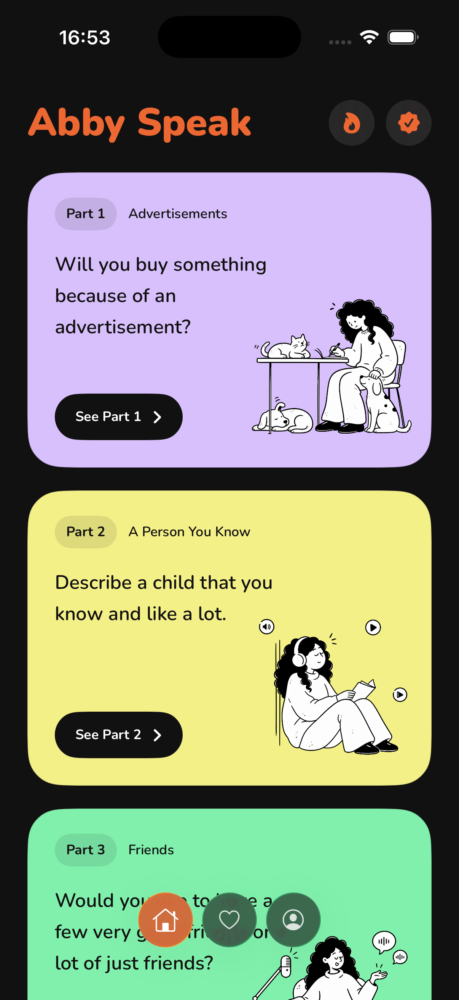
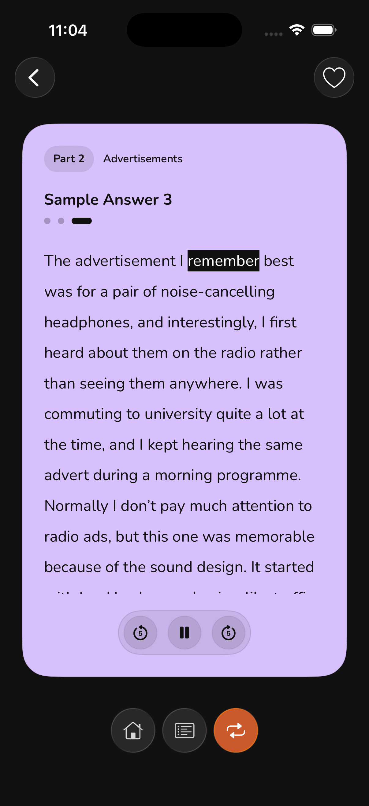
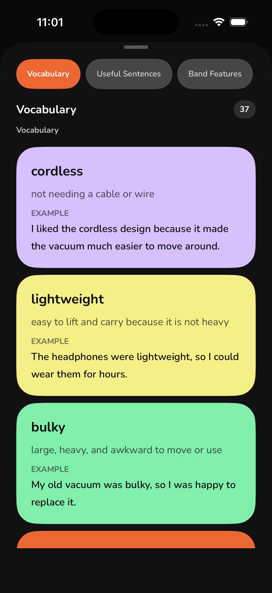
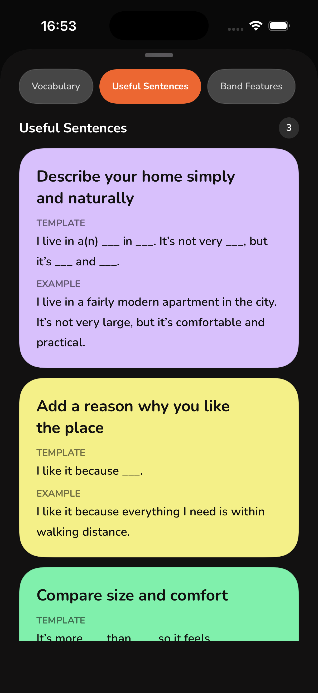
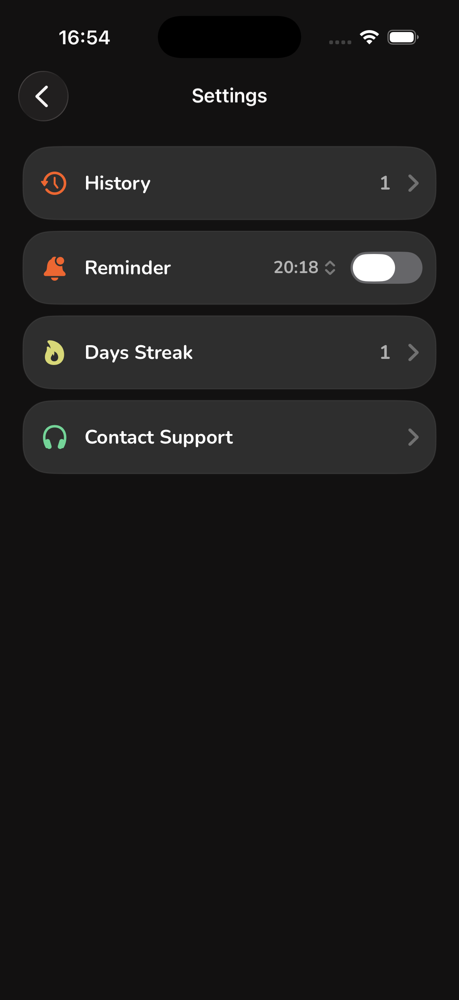
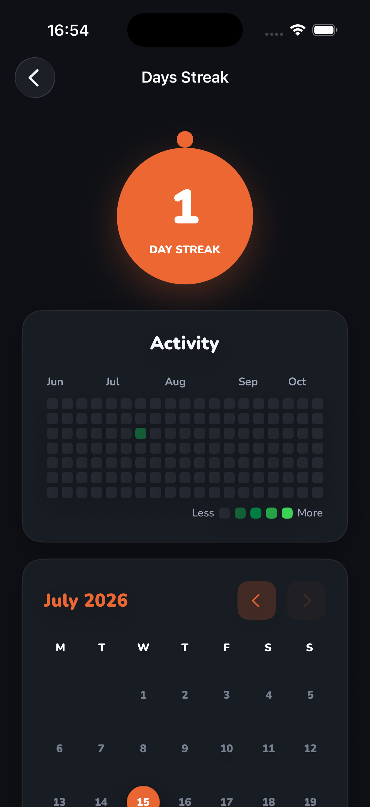
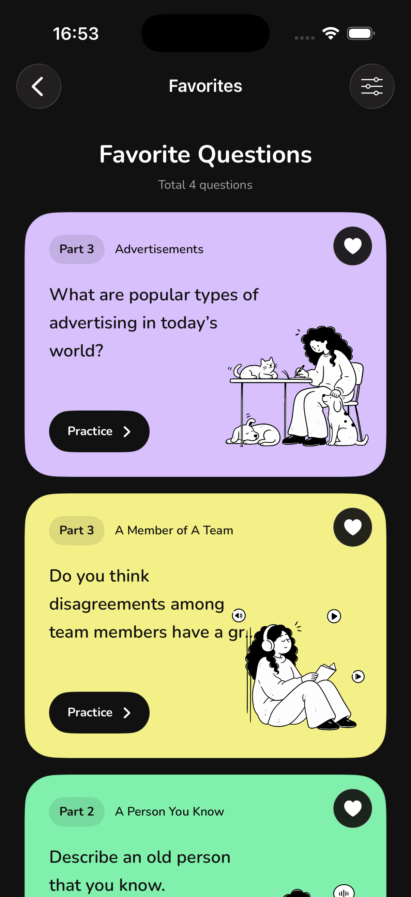

IELTS Speaking practice
Speak with more ease.
Build your answers with natural examples, useful vocabulary, and focused repetition that sounds like real conversation.
Download on theApp StoreNaturalsample answers
Practicalspeaking habits
FocusedIELTS topics

A calmer way to practise
Small, repeatable sessions. Real progress you can hear.
Abby Speak turns the parts of IELTS speaking that feel overwhelming into a simple daily practice loop.
01 — Answers that sound human
Find your natural flow.
Practise with sample answers that give you a clear direction, then make the language your own.

02 — Language for real answers
Build language you will use.
Explore topic vocabulary and ready-to-adapt sentence patterns, so your answers feel clear, natural, and your own.


Keep the momentum
Your practice has a pulse.
Use reminders and a visible streak to make speaking practice part of your day—not another task you postpone.
Build a habit, one day at a time.
See the sessions adding up.
03 — A habit you can see
Track every step forward.
From reminders to activity history, Abby Speak keeps your small wins close enough to keep going.


Return to the prompts that matter
Keep your favourite questions close.
Save speaking prompts you want to practise again, so the next focused session is always within reach.
